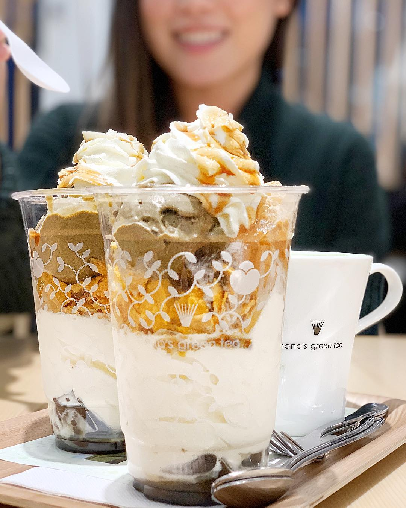
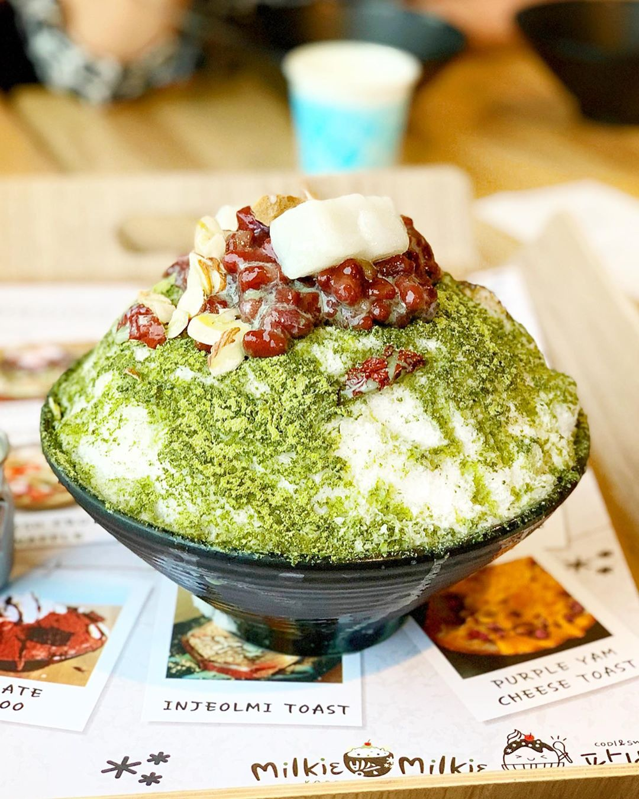
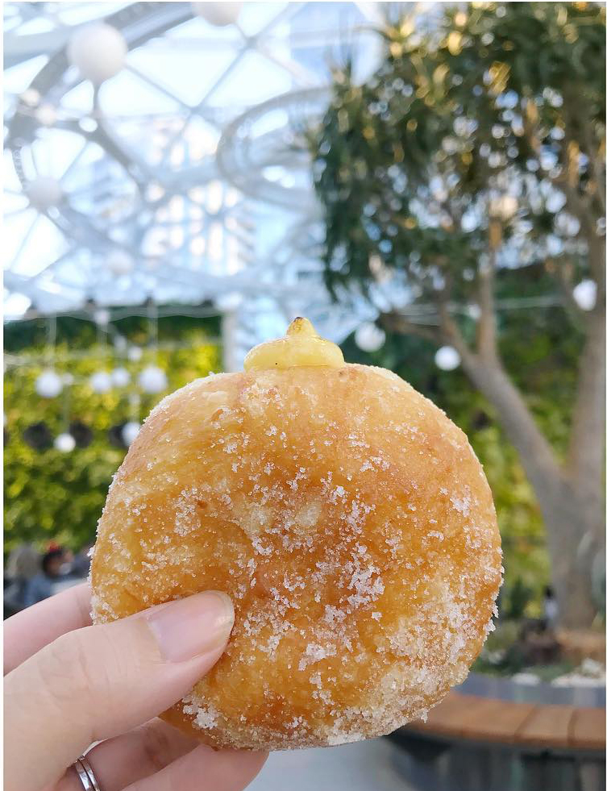
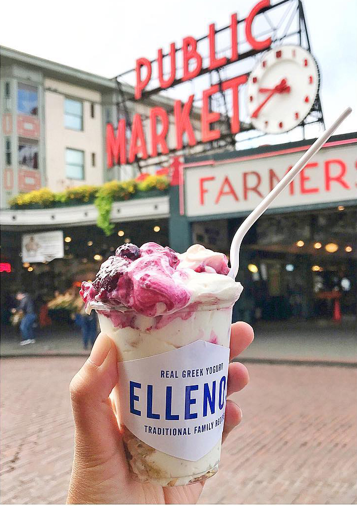
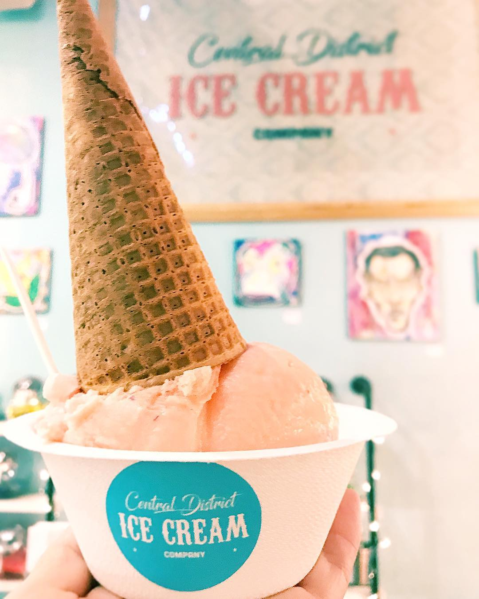

Known for their green tea but you got to try the black sesame ice cream.
Toddler Tip: Depending on when you go, the lines can be long.
Korean shaved ice that tastes like cream. A must try!
Toddler Tip: Prepare for a long wait. No diaper changing stations.
Unique filled doughnuts with flavors like chocolate marshmallow and rose cream. (E Union St location)
Toddler Tip: Small space, limited seating.
Who knew greek yogurt can be a dessert? With Ellenos it can be! (Pike Place location)
Toddler Tip: Think food stand, no seating and grab and go. Bring napkins.
Ask for Ube Latte, their ube and coffee ice cream.
Toddler Tip: Small space, limited seating.
